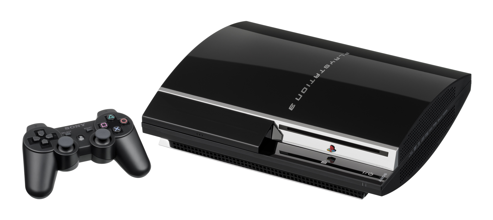

The Autopsy Report · Device #020
The PlayStation 3
The console with a supercomputer chip inside — literally; researchers clustered them. We haven't opened one yet, so this report is built from the public record: Sony's FCC filing with internal photos, independent teardowns, and the Cell processor's strange career.
What is this thing?
The PlayStation 3 is Sony's seventh-generation console, launched November 11, 2006 in Japan (November 17 in North America). Its heart is the Cell Broadband Engine — a radical IBM/Sony/Toshiba design with one main core and eight helper cores — paired with an NVIDIA RSX graphics chip and a Blu-ray drive, which the PS3 used to win the high-definition disc war the way the PS2 won DVD. Wikipedia
This report covers the family from the launch CECHA/CECHB "fat" models through the final CECH-4300 super-slim. The representative paperwork: FCC ID AK8CBEH1000 — and this filing is unusually generous, with a genuine internal-photo exhibit of the board. FCC internal photos One precision point: the Emotion Engine (the PS2's CPU) appears in this report only where it belongs — inside the launch/backward-compatible models, which included PS2 hardware. Later models dropped it; don't generalize.
Not yet on our bench
No unit of ours has been opened for this report. Everything below comes from public records: the FCC filing with its internal photos, independent teardowns, and published specifications. The public-record facts are as complete as we could make them; what awaits the bench is everything that requires our hands on our hardware — our own photos, our own measurements, and confirmation of exactly which CECH revision our future unit is. When a PS3 lands on the bench, the thin spots below are exactly where we'll start.
A short history
- November 11, 2006Sony launches the PS3 in Japan at $499/$599 — the Cell processor and Blu-ray drive make it the most expensive console of its generation, and the hardest to program. Wikipedia
- September 5, 2007Sony files a Class II permissive change for the AK8CBEH1000 grant; the exhibit set — including internal photos — becomes available January 18, 2008. FCC exhibits
- 2009 – 2012The Slim (CECH-2000) and Super Slim (CECH-4000) redesigns cut the size, the power draw, and the price. The Cell stays; the PS2 hardware doesn't. Wikipedia
- 2006 – 2017Along the way, the Cell finds a second life: the U.S. Air Force clusters 1,760 PS3s into a supercomputer, and folding@home turns idle consoles into a research grid. Wikipedia
- 2017Production ends. Over 87 million units sold — a comeback from the disastrous launch. Wikipedia
The outside
The launch PS3 is a glossy black monolith with a chrome-trimmed slot-loading drive — fingerprint magnet, sculpture, statement. The Slim matte-fies it; the Super Slim puts a sliding disc cover on top like a lunchbox. What the photo can't show: the weight. The launch unit is heavy — the power supply and the cooling say so.

The board
The launch PS3's board is the most ambitious of its generation: the Cell Broadband Engine and NVIDIA RSX sit as two large packages, surrounded by XDR and GDDR3 memory, Samsung NAND flash for storage, and — on the launch boards only — the Emotion Engine that gave the first models their PS2 backward compatibility. The FCC's internal-photo exhibit shows this layout as Sony submitted it. FCC internal photos Later revisions shrank and merged relentlessly; our future unit's exact CECH revision is bench work.
Under the microscope: the chips
What's on the board, what each part does, and how sure we are. Confirmed means primary evidence only — an FCC exhibit, a manufacturer manual or datasheet, or an official announcement. Likely means corroborated secondary or public-teardown evidence. Markings below are representative of launch-series boards; the Slim and Super Slim differ substantially.
| Chip | What it does | How we know | Dig deeper |
|---|---|---|---|
| IBM Cell Broadband Engine 3.2 GHz, 1 PPE + 8 SPEs |
The CPU — one general-purpose core commanding eight specialized helper cores. Exotic, powerful, famously hard to program. | Likely Architecture per the published specs; chip identity corroborated across teardowns. | Technical overview |
| NVIDIA RSX "Reality Synthesizer" |
The GPU — NVIDIA's custom graphics chip for the PS3. | Likely Corroborated across teardowns and the technical literature. | Technical overview |
| Samsung 1-Gbit SLC NAND | Flash storage — holds firmware and system data. | Likely Marking documented in public teardowns. | FCC internal photos |
| Sony Emotion Engine launch/backward-compatible models only |
The PS2's CPU, included in launch models so they could play PS2 discs natively. | Likely Documented in teardowns of launch boards; absent from later models — do not generalize. | Technical overview |
The Cell and RSX are custom silicon with no public datasheets — the industry documentation gap, as usual. The Emotion Engine row carries a scope warning on purpose: it belongs to the CECHA/CECHB launch boards, not the family. Awaiting the bench: our unit's exact CECH revision and its chip date codes.
The government's file on this box
This is one of the better FCC records in the Hot 100. FCC ID AK8CBEH1000 covers the PS3 with a full exhibit set — and crucially, a genuine internal-photo exhibit showing the board as Sony submitted it. A Class II permissive change was filed September 5, 2007, with the exhibit set available January 18, 2008. FCC internal photos Browse the filing: AK8CBEH1000 internal photos on fccid.io. As always, the exhibit shows Sony's certification sample — production boards drifted, and ours will be its own evidence.
Debug and service modes
The PS3 has a Safe Mode — Sony's official recovery path, documented in Sony's support materials. The procedure as published: with the console off, press and hold the power button until the console turns on and then off again (about five seconds); then press and hold power once more until you hear two beeps — one at power-on, another about five seconds later — and release. Connect a controller via USB and the Safe Mode menu appears, offering restart, display reset, database rebuild, system update, and full system restore options. Documented procedure This is a legitimate, manufacturer-documented recovery procedure — the kind of thing we document, not the kind we defeat. We haven't tested it on our own hardware, because we don't have any yet.
What public records show
The public record gives us the PS3's full biography: launch and revision dates, the Cell/RSX architecture, the memory and storage configuration, the launch models' backward-compatibility hardware, a strong FCC filing with internal photos, and an official Safe Mode procedure. What it does not give us is anything that only exists inside a specific unit — CECH revision, board date codes, or how component choices drifted from the fat models to the Super Slim. That's the bench's job.
What we haven't done
- We haven't opened, photographed, or measured a PS3 of our own.
- We haven't confirmed which CECH revision our future unit will be.
- We haven't tested Safe Mode on our own hardware.
- We haven't verified the chip markings against a physical board.
- The photo above is a freely licensed stock image, credited in full — not our hardware.
By the numbers
- Model range: CECHA/CECHB (launch) through CECH-4300 (Super Slim)
- FCC ID: AK8CBEH1000 — with internal-photo exhibit; Class II permissive change 2007-09-05, exhibits available 2008-01-18
- CPU: IBM Cell Broadband Engine, 3.2 GHz
- GPU: NVIDIA RSX
- Memory: 256 MB XDR + 256 MB GDDR3
- Storage: 2.5-inch hard drive (user-replaceable), Samsung NAND flash
- Media: Blu-ray — the drive that won the format war
- Launched: November 11, 2006 (Japan); November 17, 2006 (North America)
- Units sold: over 87 million
Words to know
Every term this page uses, in plain English. No prior knowledge required.
- Cell Broadband Engine
- The PS3's CPU: one general-purpose core (PPE) plus eight helper cores (SPEs). Brilliant for physics and video; brutal to program for.
- RSX ("Reality Synthesizer")
- NVIDIA's custom graphics chip for the PS3.
- XDR memory
- Rambus's high-speed memory, used for the Cell's main RAM — extremely fast, extremely expensive.
- Class II permissive change
- An FCC paperwork update extending an existing approval to a modified device — no new ID needed.
- Safe Mode
- Sony's official recovery screen: power-button beep sequence, then repair, update, or restore the console.
- FCC ID
- The ID the FCC assigns to each approved wireless product. Punch it into fccid.io and the whole public filing comes up.
Sources & confidence
- FCC ID AK8CBEH1000, internal-photo exhibit, 2007-09-05 Class II permissive change, exhibits available 2008-01-18: the FCC filing record. High confidence.
- Chip identities (Cell, RSX, Samsung NAND, Emotion Engine on launch boards): public teardowns with photographs, cross-checked against the FCC internal photos. Medium-high confidence; revisions differ substantially.
- Launch/revision dates, sales figures, Cell architecture, backward-compatibility scope: published technical overviews. High confidence in the facts, medium in any single source.
- Safe Mode procedure: Sony's documented support procedure as published. High confidence in the procedure's existence; untested by us.
- Anything not listed here is unknown until the bench says otherwise. We'll say so, out loud, when that's the case.
We publish no firmware, serials, keys, or private data. This report uses only public records plus a freely licensed stock photo.
Legal note. BareBoard is an educational project. We don't publish, host, or distribute firmware, keys, passwords, or credentials. Product names and trademarks belong to their respective owners and appear here only to identify the hardware. If you believe anything here infringes your rights, contact us and we'll address it promptly.